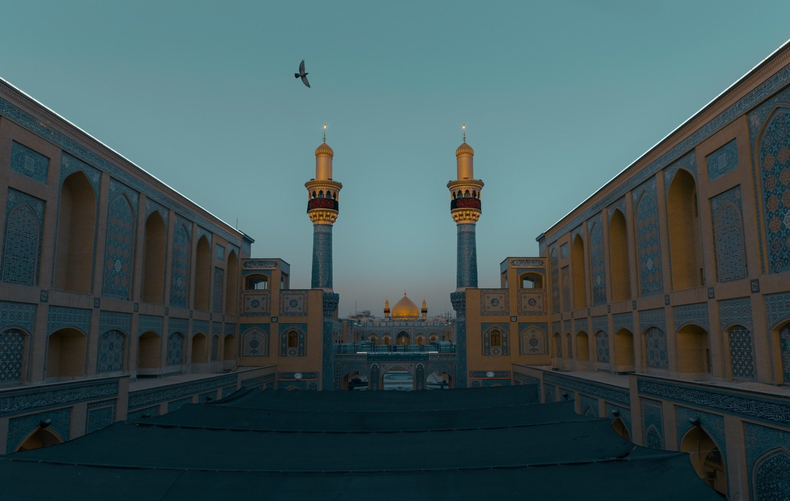

Ask a question or type a topic. ShiaLib shows you where to read about it on trusted Shia sources.
The Ark of Salvation: From the Kaaba to Khorasan
Loading the catalog…
ShiaLib needs JavaScript. It runs entirely in your browser: nothing you type is sent anywhere.